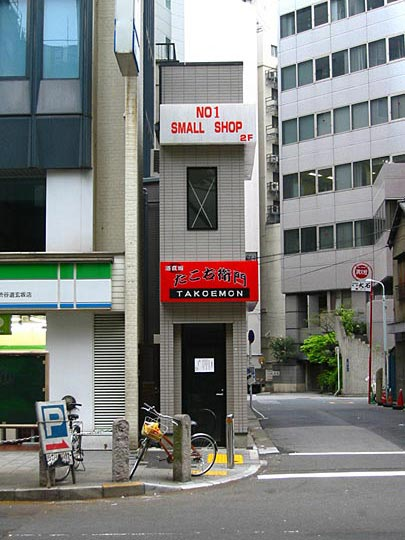
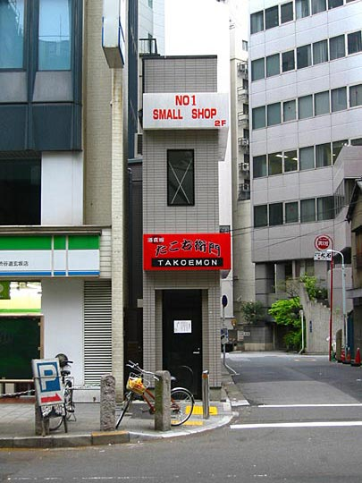
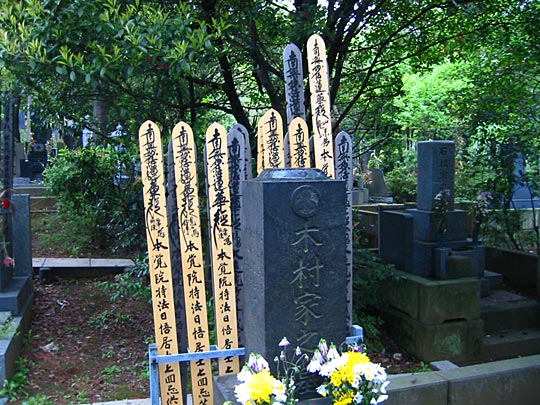

Select your breakfast. The plastic-food display outside. We had the 420 Yen meal.
Select your breakfast. The plastic-food display outside. We had the 420 Yen meal.

Funny little shop along Dogon-zaki on the way to the station.
Photos from our second trip to Japan, 18 March–2 April 2005 are on Flickr
The street our hotel's in. Walking towards the station.
Woke early again, but sleep patterns improving. One big mistake today — not taking warm clothes. Had to buy an extra shirt later the morning on Takeshita-Dori. But a nice shirt, though. It reads:
THE INDIVIDUAL ATTITUDE
THE PROTECTS
RETURNED
We got along in this earth
many people are increasing now
An age passed, and became dirty
Treasured more now?Is it wrong?
TIME PASSED AND PRESENT AGE 21
THE OLD THOSEDAYS
ARE TAKEN BACK FOR
OUR LIFE
Japanese breakfast at a place where you key in your choice into an automat, then a server eventually appears and brings it on a tray. There's a rice warmer with unlimited rice. Quite confusing, but a hung-over young guy sort of helped out. Anyway, I think I'll get skinnier if I had to live here. To much of the food just too queesy. Natto — eeeyuch. Some kind fermented bean, it makes strands like spiderwebs all over your plate when you take a portion. Revolting.
Select your breakfast. The plastic-food display outside. We had the 420 Yen meal.

Funny little shop along Dogon-zaki on the way to the station.
Meiji Shrine in Yoyogi Park — mythically beautifully camphor and maple trees. Gigantic torii gates made of 700-year old cypresses from Taiwan. Copper roofs of the shrines that are curved in a way that make them seem naturally grown like dragon scales.
Words can't convey the grandeur and timelessness of these torii when you stand next to them. I've since started noticing the distinctive pi-shape of torii in other places, e.g. in Akira — at the entrance to Lady Miyako's shrine.
Sake barrels (I think), which are sometimes found within Shinto shrines as (I believe) a kind of offering. At Kamakura (day 6) we saw some that included more contemporary offerings.
Totoro-esque camphor trees. The straw garland indicates they're sacred. (There's one around the tree in Totoro too.)
I love how the roofs curve. Fantastic craftmanship.
We happened upon a wedding procession, all in ceremonial dress — solemn, yet a fun atmosphere with guys in suits scurrying all around with cameras.
Went into the Inner Garden — iris garden not yet in bloom but the trees — especially maples — amazing. Azaleas too. Corridors of them like in Spirited Away. Empress's garden, and fishing pond. (Though fishing wouldn't be a sport — the carp swim up to the jetty for food like chickens. You could just grab one.)
I can't help taking photos like these.
Azaleas in the Empress's garden
The fishing pond, full of lotuses
The most coddled irises in the world. Completely netted over, in deep worked soil with a moat all around. They bloom in June.
Azalea avenue like in Spirited Away. Did I have to stand in the way?
Back to Harajuku, to the shops and crowds of Takeshita Dori — comparable to Neal Street, with a bit of Camden. Young and funky. But kids dress much more outrageously than in London, or anywhere else I know for that matter.
[A week later we were here again, so we have more photos from then.]
The entrance to Takeshita-dori, Harajuku station and Yoyogi park in the background
Kids actually wear these outfits.
Found big cheap book/CD shop but can't find anything from just the spines — frustrating. Salesgirls continuously calling out Konnichi-waaaaaaa and other greetings in high-pitched voices, whether they're actually looking at people coming in or not. Almost like a parody of a cotton-picking call-and-response chant. Together with the in-store music quite a cacophany.
Down Omote-sando — tree-lined boulevard that puts the Champs-Elysses to shame for stylishness (if not scale) and makes Oxford Street look like shit. OK, more like Knightsbridge, but much cooler. Favourite experiences were Kiddy Land and the Oriental Bazaar (where Kelly bought a tetsubin). Ghibli merchandise [see Loot] at the former just wonderful. Those fragments of stories — just as evocative & visually striking as Hergé (there was also a Tintin shop near Takeshita-dori), but less of a cultural niche, more like well-loved contemporary folklore, more than merchandise. No taint of cynicism. And unlike Tintin, and unlike Disney, most of the images aren't just based on scenes from the books or films, but are original creations specifically for that piece.
Meiji-dori / Omote-sando intersection
Kiddy Land. 5 stories of kiddy bliss (actually, only about half the customers are children.) There are always products being promoted outside.
These characters — Hakoton — are being promoted everywhere in Tokyo at the moment, including with an excellently produced CGI music video seen on many of the building-sized video screens. They're actually quite cool toys. 3D-bitmap styled, there are 3 characters: a dog with a bone, monkey with a banana and a bear with a spoon. If you tap on a surface nearby, they detect it and start drumming and yapping.
But the wonderful toys and cute accessories reminds you this is the culture that had netsuke already centuries ago. And such a codified form of art, that translates so easily into comics. At Ota Memorial Museum of Art nearby, a tiny little gallery where you walk in slippers on tatami mats, they had a beautiful small collection of ukiyo-e paintings and prints. 17th & 18th centuries. Funny to think what European artists were up to then. Perfecting naturalism. But ukiyo-e has nothing to do with naturalism, all with style and design. Also got that feeling this morning, watching a Sailor Moon cartoon on TV. Not linear actions — just sequences of expressions and poses, each as stylised as meaningful as a kanji character.
Sushi by conveyor belt for lunch at a spot Yoko recommended. Fun, and a fraction of what it costs in London. Was quite adventurous again, including crab and raw steak items.
Beautiful Omote-sando tree-lined boulevard. Without the trees it'd be quite ugly, but with them, it's paradise. At its best in Autumn. The shops along this stretch are all high fashion: Chanel, Armani, Yves St. Laurent, etc., all pulling out all the stops for shop design, window displays, etc.
Showy architecture everywhere. Issey Miyake's in this building.
Don't know who's in this one.
Walk further along beautiful Omote-sando to the Nezu Institute of Fine Arts. Best thing we did all day. This matches the mental picture of a Japanese garden perfectly. Immaculate like a green jewel, or exquisite carving. This is artifice at its most sympathetic to nature, or at least showing an inherent nobility in human intelligence that bears comparison with nature. Many posh ladies wandering around in kimono — an event? Sunday? Just posh neighbourhood? Wish we could've photographed them in the landscape.

Nezu Institute
Gallery itself the height of civilised, restrained beauty. Screen paintings dating from early 1700s. Amazing combinations of naturalism and stylisation. Simultaneously the beauty of nature and the beauty of the artist's skill. Beauty of the mind — the capacity to invent/appreciate the vocabulary of design. Two classic screens — irises and plum blossoms — by Ogata Korin. Near the end of the holiday we saw a TV documentary on them.
Steeply sloped Nezu Institute garden
Looking back from the rear of the garden. You can see an elegant gentleman with an umbrella, clearing leaves from the pond.
Walked to Aoyama cemetery — crows barking incessantly like baboons. Took a wrong turn into another small cemetery before discovering Aoyama proper. Unfortunately, the light was already too low for good photos, and we were very tired by this point. Incredible lane of cherry trees the length of the cemetery — in bloom they would've been out of this world. Couldn't find Lafcadio Hearn's grave :( but the legacy of Western missionaries and academics (many German) very clear.

You see these painted planks at many graves. I guess they're prayers. Eventually they darken to black.
Cherry boulevard, stretching as far as the eye can see
Crows everywhere
Very tired then, and dark, so getting lost on the way to Tokyo Hands back in Shibuya caused Kelly to crack. On the plus side, we had a marvelously Japanese ice-cream sundae with gooey red beans and green macha powder in a joint called Sweden. Miraculous powers of ice-cream to revive Kelly. Tokyo Hands (8-story DIY store) great fun. (All the hands-on crafts tables! Would that work in the West?) Obligatory robot demonstration. Arriving early, I got a personal demo in flawless American (before the main demo in Japanese.) Pretty lame robot, though (BBC article featuring the Banryu). Major gimmick is integration with picture-capable mobile phone.
Tokyo Hands. A workshop table in full swing.
The Banryu "Personal Mechatronic Device". Yours for 1,980,000 Yen (£10,425). The demonstrator is using a mobile phone to put it through its (slow) paces
Struck it lucky with supper — found a great little Chinese place on the way home. Sat at the counter. Sensible efficient restaurant layout that makes the most of a tiny space — the kitchen staff are simultaneously the waiting staff and bar staff, and it's a lot of fun to watch. Very funky chef & assistant. Had great sui gyoza, yaki gyoza, spring rolls and bang-bang chicken. Walked home via Love Hotel hill. Sleep 7000 / Rest 4000. Got to love that euphemism — "rest".
Our restaurant
Next: Day 3: Ghibli Museum, Mitaka; Shinjuku